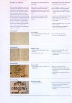
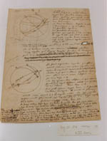
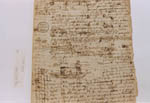
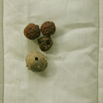
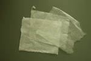
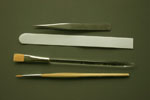
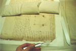
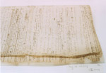

Christiaan Huygens. Facetten van een genie
De manuscripten
8 april 31 mei 2004
Tentoonstelling in de Universiteitsbibliotheek Leiden
12. Behandeling van papierschade ontstaan door inktvraat
‘Inktvraat’ kan optreden bij handschriften waarbij de inkt is gemaakt van galnoten en ijzersulfaat, vermengd met water of wijn en Arabische gom als bindmiddel. Door de zuren in de inkt en oxidatie aan de lucht versnelt het natuurlijke verouderingsproces van papier, en in het ongunstigste geval vreet de inkt door het papier heen. Omdat deze chemische reacties gekatalyseerd worden door vocht, is elke waterige behandeling schadelijk. Tot voor kort was het onmogelijk om door inktvraat aangetast papier adequaat te behandelen, maar met een recent ontwikkelde methode kunnen de schadelijke ijzerdeeltjes ingekapseld worden terwijl het zuur wordt uitgespoeld. Hierdoor stopt de versnelde degradatie en is reparatie met Japans papier en stijfsel mogelijk.
Deze methode is nu toegepast op een aantal losse bladen uit Huygens’ aantekeningen en correspondentie. In zijn werkboeken heeft Christiaan ook met ijzergallusinkt geschreven, maar een ‘natte’ behandeling van de aangetaste bladen daarin is ongewenst omdat ze dan gedemonteerd zouden moeten worden. Het wachten is nog op een ‘droge methode’.
|  | 12.1. Beoordeling van de toestand van papier
met ijzer/gallus-inkt. ICN-Informatie, nr. 1, 2000. –– Een brochure van het Instituut Collectie Nederland waarin verschillende stadia van inktvraat worden onderscheiden. |
|  | 12.2. Blad uit de bundel ‘Chartae astronomicae’.
[HUG 28] –– De foto toont de situatie voor de behandeling, het object is behandeld. Op twee plaatsen is de schade zodanig dat er gaten in het papier zijn gevallen. De doorgekraste tekstdelen worden als eerste aangetast omdat de inkt daar dikker is en er meer fysieke kracht op het papier is uitgeoefend. Losse aantekeningen en brieven in deze ‘toestand graad 4’ worden behandeld. |
|  | 12.3. Blad uit de bundel ‘De motu corporum ex
percussione et alia’. [HUG 26 A] –– Dit blad vertoonde beginnende scheuren en veel donkerbruine gebieden rondom de tekst. Het papier is behandeld waardoor afbraakproducten zijn uitgespoeld, het papier is ontzuurd en de vrije ijzerionen zijn ingekapseld. |
|  | 12.4. Galnoten. –– Galnoten dienden als bron voor tannine, grondstof voor de inkt. Diverse soorten insecten kunnen de vorming van galnoten veroorzaken. De galwesp bijvoorbeeld prikt kleine gaatjes in jong eikenhout waarin ze haar eitjes legt. De galnoten worden gevormd door de eikenboom als natuurlijke afweer tegen de afscheidingsproducten van de larven. |
|  | 12.5. Gereedschap en materiaal –– Het Japans papier wordt gemaakt in verschillende dikten. De lange vezels zijn zo sterk dat het papier ook heel dun te gebruiken is. Er wordt geplakt met zelfgekookte zuivere tarwestijfsel. Onmisbaar gereedschap is een fijn pincet, een teflon spatel en goede kwasten en pencelen. |
|  | |
|  | |
|  | |
| vorige pagina | |